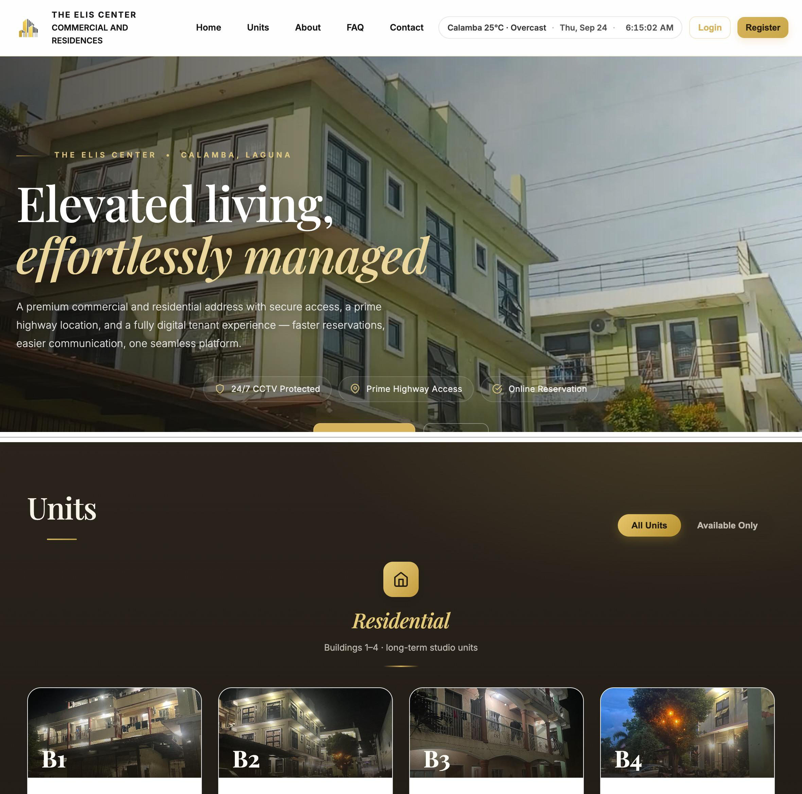

Laguna State Polytechnic University · College of Computer Studies · November 2026
A smart tenant system for Elis Business Center.
STMS is a web platform that brings tenant records, reservations, contracts, payments, concerns, and occupancy into one place for a property in Calamba, Laguna with eighty-four studio and commercial units.
Project overview
From paper records to one tenant platform.
Elis Business Center in Calamba, Laguna was managing tenant records, reservations, and payments with paper documents, spreadsheets, and direct messages. STMS was built so the administrator and the tenants could work from the same record.
Who it serves
A prospective tenant can browse units and file a reservation. A registered tenant can see the contract, the monthly bill and its history, announcements, and a way to raise a concern. The administrator manages units, approves reservations, records payments and utility bills, answers concerns, and reads the analytics. A background scheduler sends reminders.
What it is for
The purpose is to modernize tenant operations through a centralized web platform. It supports United Nations Sustainable Development Goal 9, Industry, Innovation and Infrastructure, and Goal 11, Sustainable Cities and Communities, by bringing digital recordkeeping into a small urban property business. It does not remove every operational difficulty at the property. Its usefulness depends on consistent use.
Scope
The study covers Elis Business Center only: the administrator, registered tenants, and prospective tenants using the public reservation feature. At the time of the study the property had 84 units and 113 tenants. The system records payments. Rent, deposits, and bills are still settled at the office or by bank transfer.
Degree
A capstone project in partial fulfillment of the Bachelor of Science in Information Technology, major in Web and Mobile Application Development, College of Computer Studies, Laguna State Polytechnic University, Santa Cruz, Laguna.
Statement of the problem
Records existed. They were scattered.
The manual arrangement worked, but updates lagged, payment monitoring was difficult, and tenants had limited access to their own information. There was no formal record of concerns, payment records had no reliable audit trail, and the administrator had no visual view of occupancy.
Tenant records, contracts, and reservations were split across paper, spreadsheets, and messages.
Payment status was hard to monitor, and a changed record would not announce itself.
Tenants depended on the office for contracts, bills, and announcements.
Concerns and disputes had no consistent written trail.
Occupancy could not be read at a glance across five buildings.
Prospective tenants had no shared view of which units were still available.
Research objectives
Design it, prove it, then ask the tenants.
The study aimed to design, develop, test, and evaluate a Smart Tenant Management System with analytics and blockchain security for Elis Business Center.
1. Design and develop eleven features
- Tenant registration and profile management
- Tenant portal and contract management
- Reservation and unit availability management
- Payment tracking and transaction recording
- Blockchain secure transaction logging
- Announcement and notification management
- Concern and dispute management
- Interactive floor plan visualization
- Analytics dashboard for occupancy and payment monitoring
- Mobile-responsive web access
- Optical character recognition for tenant document data
2. Verify the system by black-box testing
- Records, reservations, and payments are stored and retrieved as specified.
- An altered payment is detected by the hash-chained ledger.
- Announcements, notifications, and concerns are delivered and recorded.
- The floor plan and analytics dashboard follow the current records.
- The system operates in desktop and mobile browsers.
- OCR reads a legible identification document and refuses an unreadable one.
3. Evaluate acceptability with the intended users
- Quality factors, adapted from ISO/IEC 25010
- Perceived ease of use
- Attitude toward using
- Behavioral intention to use
- User experience
Methodology
Developmental research, built in Agile cycles.
Requirements came from interviews with the property manager, direct observation of the manual process, and a review of published work. The Agile model then carried planning, analysis, design, iterative construction, integration and testing, and deployment.
Fact-finding
Semi-structured interviews, observation of the paper workflow, and library research set the operational gaps.
Build
Each feature was built in Flask and checked against the requirement that called for it before the next one started.
Test
Ten IT practitioners ran eleven black-box cases. Testers were selected for an IT or IS degree and development experience.
Sample
The administrator was included by total enumeration. From 113 tenants, Slovin’s formula at a 5 percent margin gave 89 respondents.
Evaluate
After a supervised demonstration, tenants used the portal and answered 15 Likert items, three for each of five criteria, then a short interview.
Analyze
Frequency, percentage, weighted mean, and standard deviation. No inferential tests were used, because the objective was to describe acceptability.
Architecture and technologies
Browser, application, and one database.
The client is a browser on desktop, tablet, or phone. The application layer holds authentication, tenant and unit modules, payments with ledger hashing, concerns, announcements, analytics, OCR, a scheduler, and Socket.IO. PostgreSQL stores the records. Mail and optional Google sign-in are external services. No installation is required on the user’s device.
| Component | Technology | Role in the system |
|---|---|---|
| Backend | Python 3.11, Flask 3.0 | Server logic, routing, and blueprints |
| Data | PostgreSQL on Supabase, Flask-SQLAlchemy | Tenant, unit, contract, reservation, and payment records |
| Files | Supabase Storage | Identification documents and unit images |
| Access | Flask-Login, Authlib, Flask-Limiter | Sessions, optional Google sign-in, and login rate limiting |
| Live updates | Flask-SocketIO | Unit status and notifications without a page reload |
| Documents | OpenCV, pytesseract | Text extraction from uploaded identification images |
| Assistant | NLTK, RapidFuzz | Rule-based replies to a defined set of tenant questions |
| Analytics | NumPy, Pandas | Occupancy, revenue, and reporting computations |
| Reminders | APScheduler, Brevo | Renewal and billing reminders by email |
| Interface | Jinja2, JavaScript, PWA manifest | Server-rendered pages that adapt to a phone |
| Hosting | Gunicorn on Render | Cloud deployment reached through a browser |
Ledger, not a public chain
Each confirmed payment writes a ledger entry that carries the hash of the entry before it. A later change to a stored amount breaks the chain and is reported. The ledger stays inside the system database. It is not a decentralized network and does not use distributed consensus.
Twelve principal tables
The tenant profile is the hub. Payments, utility bills, concerns, and renewal requests reference it. The payment ledger is kept apart from the payment table on purpose, so a changed amount can be detected. Identity images are stored separately from the row they verify.
System features
Screens from the deployed system.
Select a screen. Choose the image to enlarge it. Amounts and statuses on these screens are records in the live system at the time of capture. They are not the evaluation scores in Chapter IV.

Registration
An account is created only after the one-time password is confirmed. Profile edits and photo changes save, and a wrong password is refused.
Contracts
The portal shows the contract period and progress. A renewal request is recorded and extends the contract once the administrator approves it.
Reservations
A request is stored as pending and the unit is held. Approval marks the unit occupied and removes it from the public listing. Units are not assigned automatically.
Payments
The administrator records payments, and tenants can submit proof. A proof stays awaiting review until it is verified. The system does not collect the money itself.
Concerns and notices
Tenants file a concern with a category and priority. Announcements reach the intended audience, and the notification bell updates without a reload.
OCR
A legible identification image yields the document type and number for review. An unreadable image is refused. Extracted values are not written until a person has seen them.
Results and evaluation
Every specified test passed. Tenants rated it highly acceptable.
Ten practitioners each ran 11 cases and 28 steps. All 280 step-level observations matched the expected result. Negative cases also held: a wrong password was refused, an altered payment amount was reported, and an unreadable identification image was declined.
Black-box summary
10 system testers, 11 test cases, 110 of 110 case results passed. The result shows correct output for the inputs in the instrument. It does not measure load, unanticipated input, or resistance to attack. No load test and no penetration test were conducted.
Who answered
Eighty-nine tenants from residential and commercial units answered all 15 statements in person after using the portal. Of 1,335 responses, 1,260 were Strongly Agree (94.4 percent), 43 were Agree (3.2 percent), and 32 were Neutral (2.4 percent). None were Disagree or Strongly Disagree. The administrator’s acceptance is recorded separately in the certificate of acceptance, not pooled into these means.
| Criterion | Weighted mean | Verbal interpretation | Acceptability |
|---|---|---|---|
| Quality factors | 4.93 | Excellent | Highly Acceptable |
| Perceived ease of use | 4.93 | Excellent | Highly Acceptable |
| Attitude toward using | 4.89 | Excellent | Highly Acceptable |
| Behavioral intention to use | 4.93 | Excellent | Highly Acceptable |
| Experience | 4.92 | Excellent | Highly Acceptable |
| Overall | 4.92 | Excellent | Highly Acceptable |
The scale treats 4.21 to 5.00 as Excellent and Highly Acceptable. The five means sit within four hundredths of a point. The highest item means, 4.94, were on the security of personal information, finding information in the portal, reliability for continued use, and preference for the online features over the manual way. Ratings were gathered in person at one property and should be read as acceptance by these users, not as a general result.
Conclusions and recommendations
The records are in one place, and a changed payment can be seen.
Conclusions
The eleven features perform their intended functions. People who did not build the system could operate it as specified, within the limits of black-box testing. Chaining each confirmed payment to the one before it makes an alteration detectable. Tenants can read the contract, the bill, and the history without asking, and the administrator can read occupancy and outstanding accounts without assembling them by hand. OCR assists that review and does not replace the administrator’s judgment. The intended users accepted the system on every criterion.
Recommendations
Keep the unit inventory and utility readings current in the system, and give incoming tenants a short orientation. Before a much larger number of tenants use it, run performance and load testing. A payment gateway, signed links for identity documents, and a written retention period for those documents are recommended next. Extending the ledger to a distributed arrangement, measuring OCR accuracy across Philippine identification types, computing Cronbach’s alpha from item-level responses, and a penetration test are left for future work.
Research team
College of Computer Studies
Laguna State Polytechnic University, Santa Cruz, Laguna. Submitted November 2026, with thanks to the administrator and tenants of Elis Business Center.
RE
Regie M. Estravela
Researcher
IC
Ivan Harly B. Cruzat
Researcher
PS
Prince Wency P. Sumaya
Researcher
RJ
Reynalen C. Justo, LPT, DIT
Thesis adviser, College of Computer Studies
MV
Mia V. Villarica, DIT
Associate Dean, College of Computer Studies
Project resources
Open the system, the code, the walkthrough, or the manuscript.
Live system
elis-stms.onrender.com
The deployed Smart Tenant Management System. The host may take a moment to wake.
Source codeSystem repository
The application repository for STMS.
WalkthroughDemonstration video
A Google Drive folder with the system walkthrough.
ManuscriptFull capstone manuscript
The thesis document used as the source for this page.